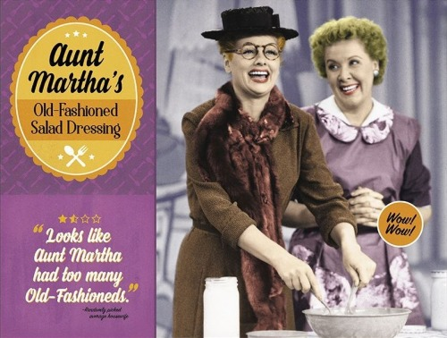

Aunt Martha's Old-Fashioned Salad Dressing

Ricky: “There’s lots of wonderful salad dressings on the market made
by people who know what they’re doing!”
It was the 79th episode filmed. As one of Fred’s many “get-rich-quick schemes,”
Lucy and Ethel go on TV to sell Aunt Martha’s Old-Fashioned Salad Dressing. But, the girls end up paying more
to make the salad dressing than they do selling it! This dressing recipe is so good, you'll want to drink
it straight out of the container.
Makes 12 servings
Ingredients:
- ¼ cup minced sweet onion
- ¼cup white vinegar
- 2 tablespoons honey
- 2 teaspoons Dijon mustard
- 1 teaspoon freshly squeezed lemon juice
- ½ teaspoon celery seed
- ¼ teaspoon salt
- ¾ cup vegetable oil
Steps:
- Place the onion, vinegar, honey, Dijon mustard, lemon juice, celery seed,
and salt in a blender.
- As it blends, pour in a steady stream of oil until the dressing
comes together.
- Keep in the refrigerator in an airtight container until ready to use.
Return to homepage